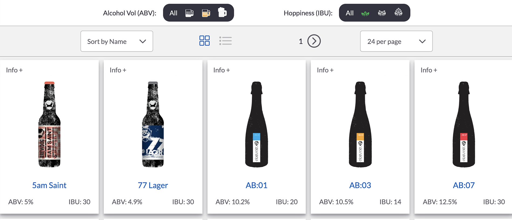
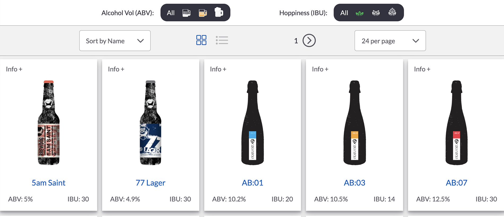

Punk API
Beer Filter
Filter by ABV & IBU

Filter by ABV & IBU
The Punk API Beer Filter began as a project from the Scrimba Frontend Development Career Path to learn the Fetch API. The application provides the user the ability to filter the Punk API's beer list by alcohol volume (ABV) and/or hoppiness (IBU) and view detailed information about the individual beers.
 
